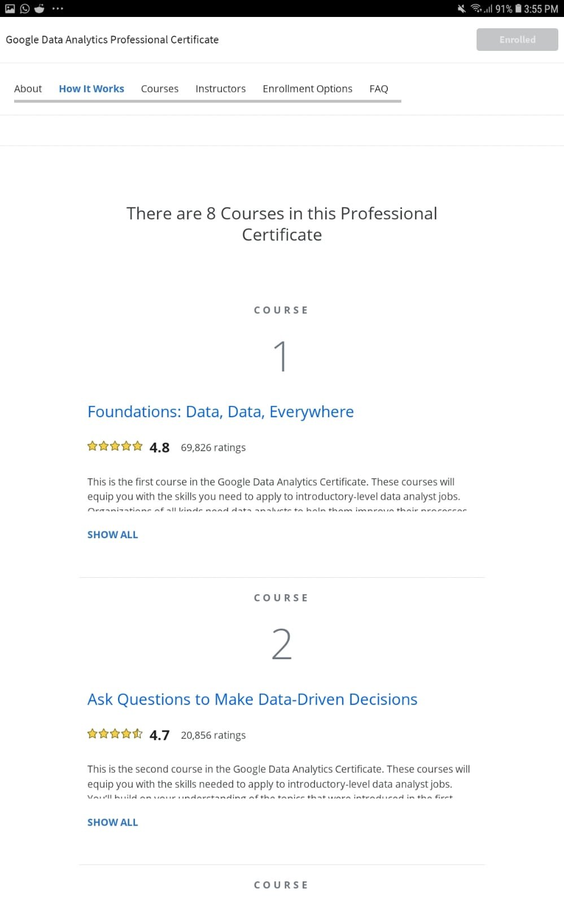
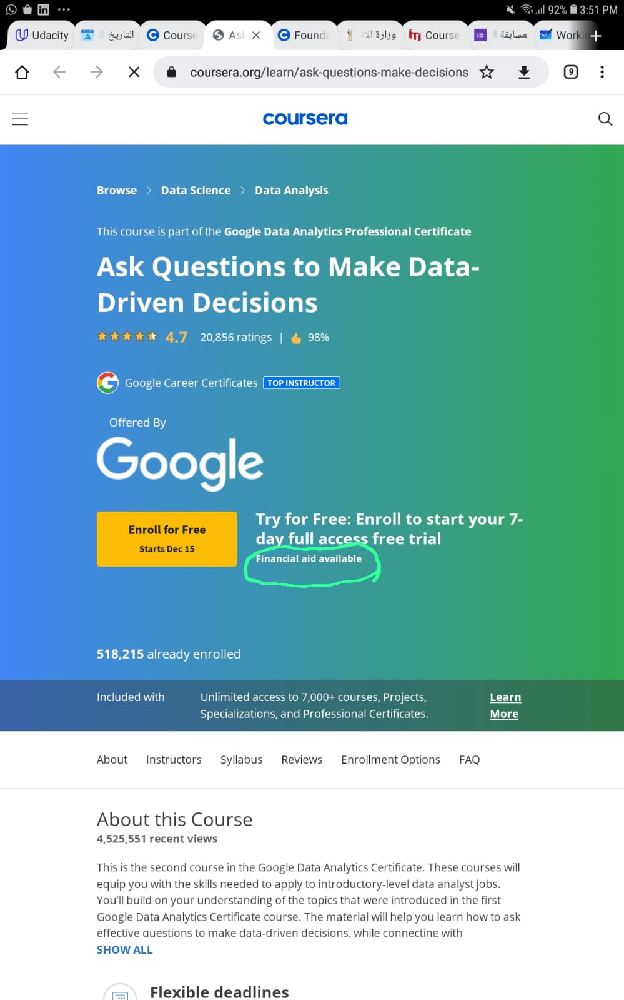
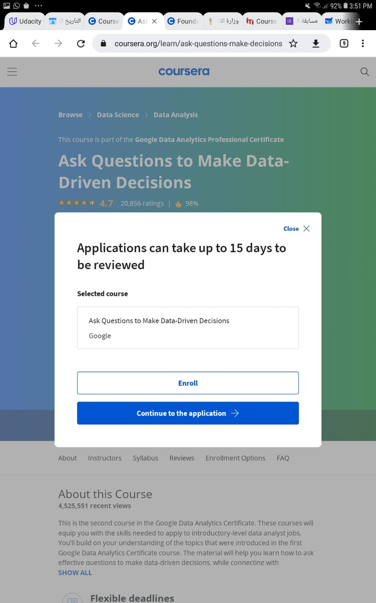
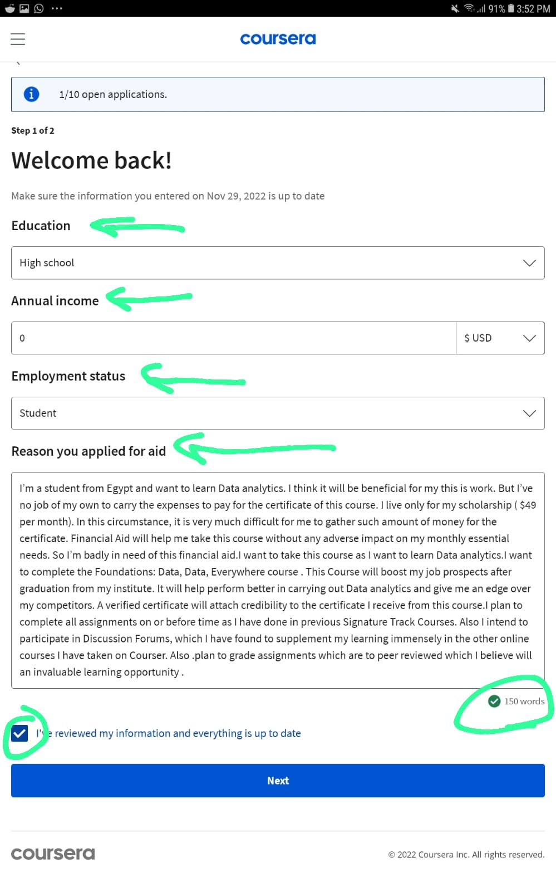
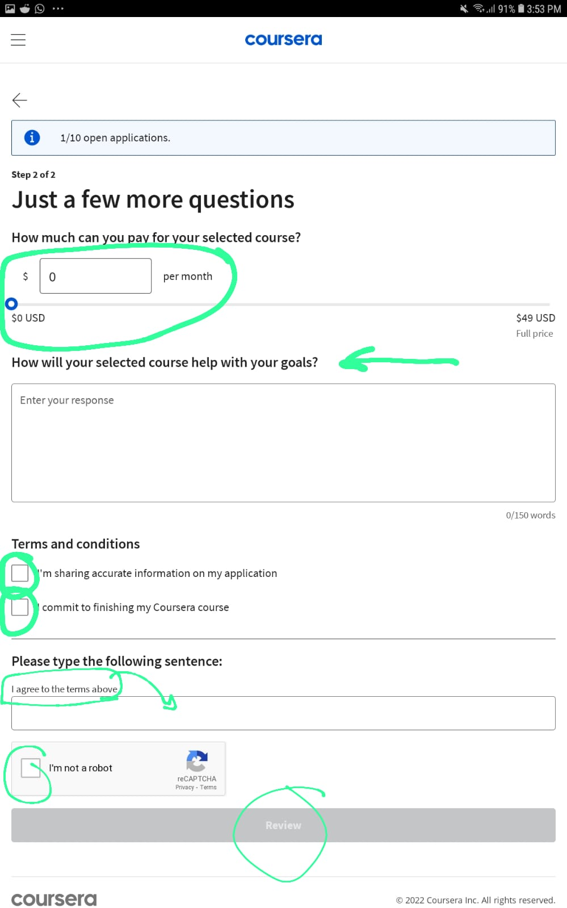
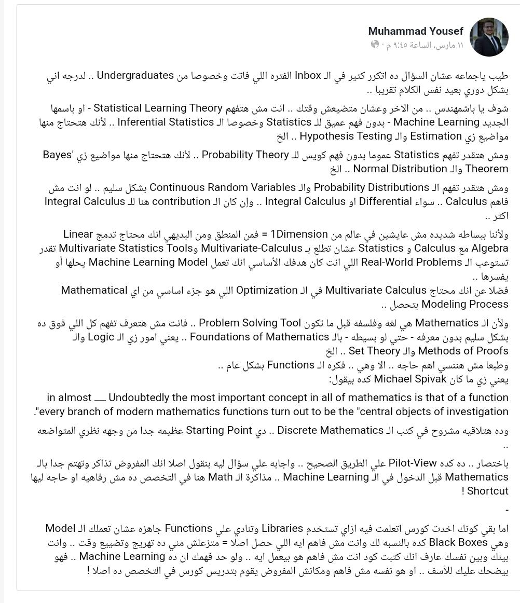

عن دبلومة جوجل
شوف الفيديو
ده و
ده
ازاي نحصل على الدعم المالي
بنفتح صفحة المساق من
هنا

المساق متقسم لكورسات بننزل تحت عشان نوصلهم بنقدم على الدعم المالي في اول كورس وبنخلص اول كورس وناخد شهادته وبعدها نقدم على الدعم المالي في تاني كورس وهكذا

بنخش على صفحة الكورس اللي عليه الدور عشان نقدم على الدعم المالي بنضغط هنا

بيظهرلنا دا معناه ان الأبلكيشن اللي هنملاه هيتراجع ويترد علينا بعد 15 يوم وبنضغط continue to the application عشان نقدم على الدعم المالي

بيظهرلنا الشاشة دي، خانة الeducation بتحط فيها ايه اخر مرحلة تعليمية خلصتها. لو انت في الكلية معناها انك لسة مخلص ثانوي يعني high school.
Annual income
يعني لو انت بتشتغل وبتقبض فلوس بتكتب انت بتاخد كام في السنة ولو انت مش بتشتغل بتكتب صفر.
Employment status
يعني، ايه حالتك الوظيفية دلوقتي بتشتغل بدوام كامل ولا جزئي ولا ولا طالب وهكذا
Reason you applied for aid
بتشرح ظروفك المادية وليه انت محتاج الدعم المالي وهيفيدك بإيه الدعم المالي
الاجابة بتاعت السؤال دا هحطهالك في الاخر. هتراجع المكتوب وتعدل الحاجات اللي محتاج تعدلها هبقى احطلك الحاجات دي بين اقواس

اول دايرة بتحط فيها المبلغ اللي تقدر تدفعه للكورس شهريًا
السهم اللي تحتيها بتشرحله الكورس دا هيساعدك ازاي في تحقيق اهدافك
هكتبلك تحت برضو ازاي تجاوب عالسؤال دا واحطلك الحاجات اللي محتاج تعدلها بين اقواس
Please type the following sentence
بتاخد الجملة اللي حواليها دايرة خضرا كوبي وتعملها بيست في المربع اللي متشاور عليه
question 1:
I’m a student from Egypt and want to learn (Data analytics). I think it will be beneficial for my this is work. But I’ve no job of my own to carry the expenses to pay for the certificate of this course. I live only for my scholarship ( $49 per month). In this circumstance, it is very much difficult for me to gather such amount of money for the certificate. Financial Aid will help me take this course without any adverse impact on my monthly essential needs. So I’m badly in need of this financial aid.I want to take this course as I want to learn (Data analytics).I want to complete the (Foundations: Data, Data, Everywhere course) . This Course will boost my job prospects after graduation from my institute. It will help perform better in carrying out (Data analytics) and give me an edge over my competitors. A verified certificate will attach credibility to the certificate I receive from this course.I plan to complete all assignments on or before time as I have done in previous Signature Track Courses. Also I intend to participate in Discussion Forums, which I have found to supplement my learning immensely in the other online courses I have taken on Coursera. Also .plan to grade assignments which are to peer reviewed which I believe will an invaluable learning opportunity .
question 2:
It's really impossible for me to pay for this course. I want to take this course as I want to complete the (Google Data Analytics Professional Certificate) on Coursera. I need financial aid because I am from Egypt and my income cannot pay for this course. Now I do not have a job to pay for it. My mother income cannot neither pay for it. I'm a (first year) student at (Faculty of Computer and Data Science, Alexandria University), I didn't start my career yet and I need the financial aid because I can't afford the courses without having a job .I need to take this course to work and have money to increase my skill and help my father. I plan to complete all assignments on or before times I have done in previous Signature Track Courses. Also I intend to participate in Discussion Forums, which I have found to supplement my learning immensely in the other online courses I have taken on Coursera. I also plan to grade assignments which are to peer reviewed which I believe will an invaluable learning opportunity.I hope these reasons are enough I really thank you. So I need your help by giving me financial aid. The course will help me study (Data analytics) that help me work a freelance to earn money. I'll always participate in the discussion forms and help others with my knowledge. I will meet deadlines and will not hesitate to ask if there's something I don't understand The certificate would be a valuable thing for me because it'll help me get better job opportunities and start my career as fast as possible. It'll show that I'm a hard worker and self learner also that I'm very active. I want to add to my CV in the future. Then i want to complete the (Google Data Analytics Professional Certificate) on Coursera. I think it will be beneficial for my thesis work. A verified certificate will attach credibility to the certificate I receive from this course.I will share my information to help other to learn and work to earn money. I hope that you .give me the chance. And finally I really thank you ..
أظن مش محتاج أقولك ان المفروض نراجع الكلام اللي هناخده كوبي دا ونتأكد انه بيوصفنا وفيه مصداقية مش بننقل وخلاص هاااه
خد بالك الدعم المالي بيفتحلك فترة محددة تخلص فيها الكورس مش سداح مداح
قدم لما تبقى مستعد تخلص في الوقت
وعقبال ما يتقبل الدعم المالي خش اتفرج عالفيديوهات وادرس الكورس
قناة ملخصات كتب (بالعربي) لسة مكتشفها
here
تبقو قولولي رأيكم فيها
قناة ملخصات كتب برضو بالعربي برضو بس دي بسمعلها من زمان
here
leetcode.com
موقع problem solving
بيديك حاجات تحلها زي شيتات البرمجة اللي عندنا في الكلية بس بيtest كل الاحتمالات الممكنة للinput فيها logic error ولا لا من غير تدخل بشري
وبيقيس الperformance بتاع الكود اللي كتبته
وتقدر تحل عليه بأي لغة برمجة انت حاببها
الكورس ده فيه advanced java من iti لسة عامل enroll فيه من شوية قبل ما يبقى ب2000 جنيه
click here

مهارة الكتابة السريعة من المهارات المهمة جدا لأي مبرمج ولأي شخص يتعامل مع الكمبيوتر بشكل يومي، في هذا
الفيديو وفي موقع احسن من typing club اسمه keybr نتعرف على كيفية تعلم الكتابة السريعة على الكيبورد
اللي خلاني اجيب مجموع في ثانوية، تلات حاجات: كل يوم لازم اعمل حاجة، طالما لسة فيا الروح لازم أحاول تاني والفيديوهات عن المذاكرة على قناة المِعَلم دا
link
وكمان، البودكاست اللي بيعملها على قناته الشخصية على ما أتذكر. هي اللي عرفتني على ناس بتفهم بجد في مجالات الكمبيوتر بعيدًا عن بياعين الكلام. فشوف الشلة بتاعته فيها مين حاسه عاوز تاخد منه معلومات وتابعهم
مثلًا
قناة غريب الشيخ
وكمان، البودكاست اللي بيعملها على قناته الشخصية على ما أتذكر. هي اللي عرفتني على ناس بتفهم بجد في مجالات الكمبيوتر بعيدًا عن بياعين الكلام. فشوف الشلة بتاعته فيها مين حاسه عاوز تاخد منه معلومات وتابعهم
افتتاحًا لحوارات الويب، هنشوف
الفيديو الجميل دا